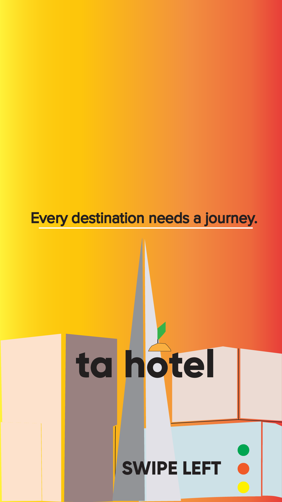

Education
School
Secondary Education
Institution: Robert Bateman High School (Closed As Of 2020)
High School Diploma - IB Diploma Programme (Certificate)
Postsecondary Education
Institution: Toronto Metropolitan Univesity (Formerly Known As Ryerson University)
International Economics and Finance (Bachelor of Arts) - Undergraduate Studies
Duration: May 2018 - May 2020
Financial Mathematics (Bachelor of Science) - Undergraduate Studies
Current CGPA: 3.30
Duration: May 2020 - TBA
Relevant Coursework
CGCM130 - Design and Layout (CGPA: A+)
Date Taken: Summer 2022
As part of my journey towards learning Adobe tools that would become
useful within creative environments, I took upon this course in order to
improve my skills in Adobe Illustrator, Photoshop, and InDesign. My showcased
work can be seen below.
Magazine / Tourism Project (Adobe Illustrator):

 Project - CGCM130.png)
.png)
 Tourism Project - CGCM130 (1).png)
 Tourism Project - CGCM130 (2).png)
 Tourism Project - CGCM130 (2).png)
CRI300 - Digital Design Studio (CGPA: B-)
Date Taken: Winter 2023
Apart from learning Adobe tools necessary towards creating content that would
geared towards marketing-related projects, I felt that it would also be necessary
to take it upon myself to take another class that would help me advance my skills,
but to also gain an introduction into the world of video production through the use
of tools such as Premiere Pro, as well as After Effects. My work can be seen below
this article.
Adobe Photoshop Project:
.png)
Adobe Illustrator Project:
.png)
Adobe After Effects Project(s):
After Effects Project #1
After Effects Project #2
Certifications & Badges
R, Power BI, Excel, Python
Bootcamps at the Ted Rogers School of Management
Description:
Between May and June 2020, I decided to take programming courses that
would better expand my knowledge of data science, and felt that the
Ted Rogers School of Management would be helpful with that. Here are
the badges I've earned.
R:
R Project
Power BI:
Power BI Project #1
Power BI Project #2
Excel:
Excel Project #1
Excel Project #2
Excel Project #3
Python:
Python Project #1
Python Project #2
Python Project #3
Personal Data Science Project:
After haven taken a series of workshops from the Ted Rogers School of Management,
I was inspired to build my own project which is currently in the works. The project in
of itself, is focused on taking large sums of data, and calculating how much an increased
level of activity with exercise is correlated with higher productivity towards studying.
The project was assisted on behalf of one of the instructors from my bootcamps, Jacob Dougherty,
whom assisted me with problem solving some of the programming. You may access the project or contribute
to the project here.
Data Science Project
Assisting Instructor: Jacon Dougherty (https://www.linkedin.com/in/jake-dougherty-b9a066156/)
Awards
SPROUT Case Competition
1st Place
Description:
During February 2020, I decided that I wanted to get myself into
the general space of entrepeneurship, where I could practice teamwork
amongst others who were aiming to grow their communication skills. After
a lot of problem solving, and consulting ideas, our team reached 1st place
after proposing a entrepeural idea that would aim to solve the healthy food
crisis in Toronto.
SPROUT Winning Team Page

.jpg)
.jpg)
.jpg)
.jpg)
.jpg)
.jpg)
.jpg)
.jpg)
.jpg)
.jpg)
.jpg)
.jpg)
.jpg)
.jpg)
.jpg)
.jpg)
Career
Official Positions
Director
BlockchainUniversity - Permanent Full-Time
Duration: March 2023 - Now
Description:
In 2019, after the 10th year anniversary of Bitcoin, there were lots of
discussions about the topic of cryptocurrency, and how it was slowly beginning
to grasp the financial aspect of the world in both positive and negative aspects.
Inspired to learn more, 4 years after I decided to start up my own student organization,
focused on helping undergraduate students across the GTA learn more about the subject,
and to help get themselves prepared for the next generation of the internet. During late
August of 2023, I was also given the privilege of attending Toronto's biggest summer hackathon,
where I got to host a drop-in workshop explaining a general introduction to what blockchain
technology is. Pictures of this event can be seen below:
.png)
.png)
Producer
Game Makers Union - Permanent Part-Time
InstitutIon: Toronto Metropolitan University
Duration: April 2021 - February 2022
Description:
Starting in April 2021, I spent 8 months consulting a student group
about ways at which they could rebrand themselves to better fit the
interests of undergraduate students seeking time out of their studies
to learn video game development. I have worked on creating logo animations,
video workshops, and even ended up collaborating with the IEEE TMU student
branch to reach other computer science and engineering communities about
the brand. You can find some of my work here:
GMU Logo Animation:
GMU Logo Animation
GMU Video Workshops (Edited By Tolga Acan, Published by Viktor Korolyuk):
Most-Watched Workshops:
400+ Views
100+ Views
IEEE Video Workshop Series:
Other Videos:
GMU Social Media Posts:
September 29th, 2021
Cognigeeks
Research Assistant - Part-Time
Toronto Metropolitan University
Description:
Taking place remotely in Toronto, I was given the opportunity to
participate in a research assistant position at TMU for a game startup, where I was tasked
with picking a role that would help to develop a web game called Cognigeeks,
aimed towards helping STEM students in their secondary or postsecondary education
learn about electrical engineering. My main participations included
working with programmers to help implement UI design, writing story
and dialogue that would help build relatable characters that the
student can be educated by, facilitating voice acting sessions, and
using a Unity tool such as Rhubarb to help synchronize dialogue with
lip movements of cartoon characters. You can find the entire game here:
Cognigeeks Game:
Official Game Folder
TMU International Economics and Finance Course Union
Deputy of Internal/External Affairs - Full-Time
Toronto Metropolitan University - Remote
April 2020 - April 2021 (1 Year, 1 Month)
Description:
Back when I was studying in the Economics and Finance program at TMU,
I decided to consult another student group called IECONCU, on how they
could improve on their branding and community resources to better
reach first or second-year students who are seeking stronger guidance
when navigating the beginning of their university careers. The work
I've done included writing emails to promote case competitions hosted
by the student group itself, facilitating slide show queues during workshop
events, co-hosting case competitions with former colleagues from the SPROUT
organization where I won my award, building a website that garnered 3,500
total page views, as well as creating social media content to better engage
audiences of the platform. You may find my work here:
IECONCU Old Website Snapshots:
January 20th, 2021
IECONCU Social Media Content:
Original Account
TikTok Video (1)
TikTok Video (1)
TikTok Video (1)
TikTok Video (1)
IEF Case Competition Material
Welcome Package
Promotional Email
Congratulatory Letter
Volunteer Positions
Event Delegate
CESAR (Continuing Education Students Association of TMU)
Description:
Between October 2019 and February 2020, I wanted to grow my networking
and participation skills by attending volunteer activities on the TMU
university campus. Starting with food centers across campus, I expanded
my volunteering skills and began helping out with Winter events, at which
I was helping with the setup of in-person activities such as skating rinks.
I have also received a recommendation letter for my voluntary work, which you
can find below.
CESAR Recommendation Letter
Team Photo:

Community Volunteer
Ryerson VOTES (October 2019 - November 2019)
Description:
Starting out in my volunteer career, I felt at the time that it
would be worth it to attend activities relating to the shifting
scene in Canadian politics, hence why I decided to join the
TMU Student Democratic Exchange, where I attended activities
that would help to promote on-campus voting. After having volunteered
at art galleries, as well as handing out flyers to promote the groups
material, I learned a lot about how people can collaborate together
to support an important cause.
Ryerson VOTES Team Photo:
.jpg)
Ryerson VOTES Article
Event Coordinator
Ryerson Orientation Crew - Spirit Squad(August 2020 - September 2020)
Description:
Throughout the summer of 2020, I decided to volunteer for the
known orientation crew at TMU, in order to help with content creation
as well as event facilitation. My experiences included hosting game
events during Zoom calls for a student count of 30 people, at which
I would create and source quizzes to students in order to get general
inquiries about how comfortable they feel on campus, and what their
mood was like on that particular day when attending certain events.
I was also helping with social media content creation, in order to better
spread messages about student initiatives on campus.
Ryerson Orientation Crew Social Media: